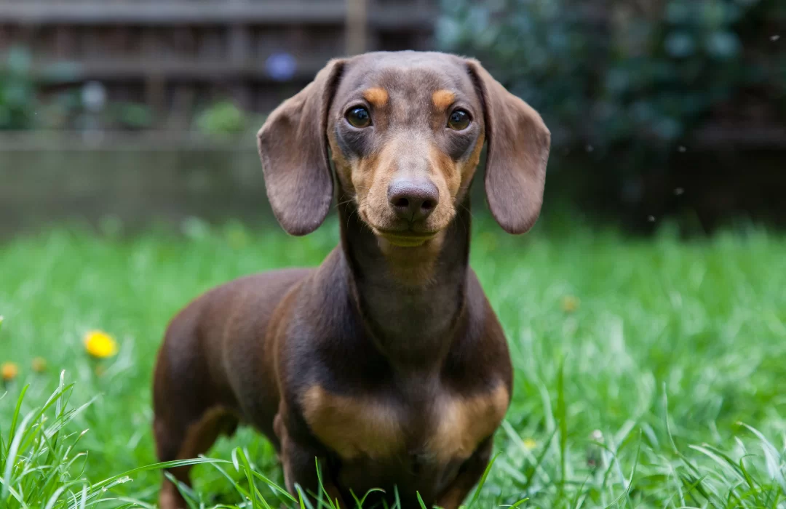

Dachshund
voltar

Os Dachshunds, também conhecidos como cães salsicha, são uma raça encantadora e distintiva. Com seus corpos alongados e patas curtas, são animais de companhia cheios de personalidade. Esses cães são inteligentes, curiosos e se dão bem em lares diversos, sendo adoráveis membros da família.